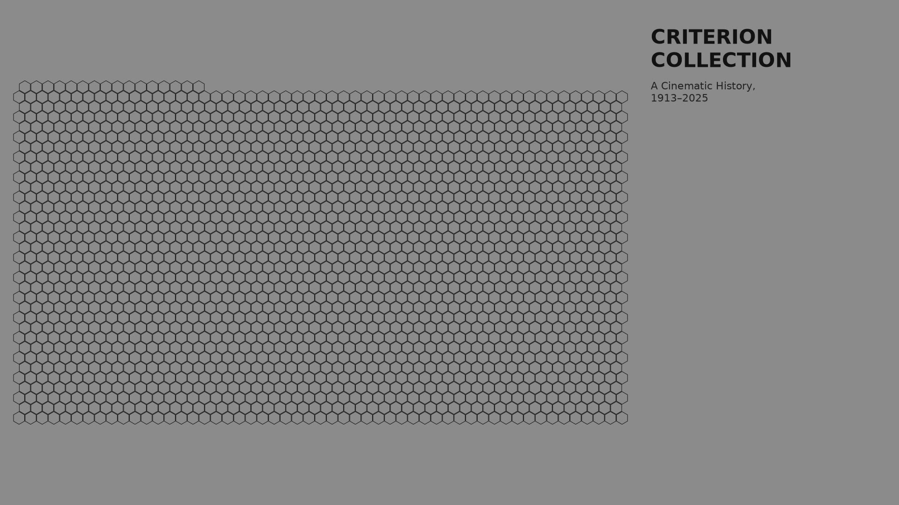

01 — Context
Criterion Over Time
The movements, studios, and eras behind the clusters — how each one fits into the broader story of film.
Read the history →
02 — Interactive
Explore the Clusters
Every film in the Criterion Collection, grouped into 11 hexagonal clusters by shared cast. Hover a region to preview it, click to explore that cluster's network.
Open the map →03 — Geography
Movie Map
Where these films were made and set, laid out geographically instead of by shared cast.
Open the map →04 — The Data
Methodology
How the clusters were built: cast-overlap graphs, community detection, and the judgment calls behind them.
Read the methodology →